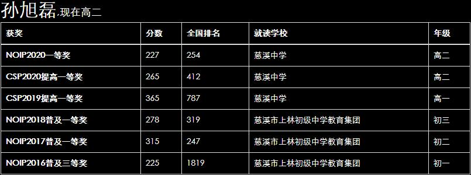

先展示一下七年的成果：  2014年暑假，青少年宫报名学习编程，可惜由于宁波教练未邀请到而取消。 2014年秋季（小学五年级），青少年宫再次组织报名学习编程，邀请数竞老师陈科当教练。启蒙老师陈科会建议不适合学习的人不再继续培训（这在别人眼里也许不可思议），最后一个班30个人只剩下了4人。 记得陈老师讲回溯算法（dfs）时，他说，这个算法有难度，在没有别人教的情况下，你不可能想出来；然而，他没有想到的是，我在学dfs之前就已经自创了它，可见我编程还是很有天赋的。 陈老师鼓励我们在中国大学MOOC网站上学习。我和骆镒妤学习了《大学计算机基础》和《程序设计基础》课程，成绩优秀。 有一段时间，陈老师让我们在oj（Online Judge）上疯狂刷题，我想或许这就奠定了我善于打暴力（指比较显然的算法，如dfs、普通DP）的基础吧。 学习期间，我还做了一些小程序，如万年历、高精度计算器等。 六年级：2015年12月，参加慈溪市小学生计算机程序设计竞赛，我获得了一等奖，陈奕阳和骆镒妤二等奖。 应该说陈老师带队还是很成功的，可惜学员太少，他带了我们一年半就不带了，我们三人都转到上林中学邹仲杰老师名下去了。 2016年3月，参加宁波市31届中小学生计算机程序设计竞赛，获一等奖。 2016年秋季开始，我们进入上林中学学习，每周机房培训，考前特训，进复赛的甚至免考了期中考试。在上林里，我遇到了很多大佬，如陈威宇、陈昊旸、潘思城、邹柳石等，同届的有戚洋、胡思远、方行楷、欧阳锳杰、陈样、胡锐阳。 初一：2016年11月，参加第22届全国青少年信息学奥林匹克联赛（NOIP）普及组，犯了一个错误，将文件名date打成data，导致总成绩由325变成了225，一等奖变三等奖，内心失落。 暑假里我和陈样干了一件有趣的事，结果进了洛谷小黑屋。 事实上，我只是想体验一下当出题人的感觉，并无恶意。这里对洛谷表示歉意。 初二：2017年11月，参加第23届NOIP普及组，终于圆了上一年的梦，顺利获得一等奖；陈样由于失误，只拿了二等奖。 学习期间，我还做了一些“病毒”程序，比如关键程序、蓝屏程序、鼠标控制程序，这里对被我玩过恶作剧的同学表示歉意。 此外，我受同学们的影响，有时会在机房里打游戏（毕竟不打游戏的没几个），不过后来不打了。 升初三的那个暑假，我是和陈样、陈奕阳等人一起准备提高组的。但NOIP报名时，邹仲杰老师给我报了普及组，他跟我说：“你成绩比较稳定，我想让你拿一个普及组的高分，所以给你报了普及组；陈样我想让他冲一下提高组。”我当时想，我哪里稳定了，连文件名都打错；但现在想想，他说的没错，我之后没有出过奇奇怪怪的错误。 初三：2018年11月，参加第24届NOIP普及组，由于太想拿高分了，就没有打暴力，结果考得并不好，不过一等奖还是有的。陈样获得了提高组一等奖。 2019年，进入慈溪中学，我们从Pascal转成了C++。在慈溪中学的第一次模拟赛我就拿了高分，盛贤良老师跟我说，邹老师说我很有实力，我毫不谦虚的“嗯”了一声。 顺便提一下，进入中学（尤其是高中）后，我发现了一个不好的风气：OIer（信息竞赛者）很喜欢说“您太强了”“我太菜了”“tql%%%”。后来这种风气甚至蔓延到了其他领域。强本来是好事，可是在他们口中就变了味。 编程训练期间，我还自学了C#和Python，并做了一些实用软件，比如飞旭考试系统、智能闲聊软件。 2019年4月27日，参加华东师范大学举办的“游族杯”上海市高校程序设计邀请赛，在那里我们遇到了学长谢嘉东。这次“游族杯”让我第一次体验了交互题。方行楷二等奖，我和陈样等人获三等奖。 2019年暑假，我们进行了编程集训，听课时不怎么懂老师讲的（都是超纲内容）。集训最后几天，我们在NOI官网上看到了暂停NOIP竞赛的公告。由于收费问题，NOIP2019被取消，CCF非专业级软技能力认证（CSP）取而代之。 高一：2019年11月16-17日，我们参加了CSP-S（提高组）第二轮认证，最后我们学校5人（方行楷、陈样、我、赵一鹏和学长邹柳石）获得一等（其成绩等同于NOIP提高组一等，可惜教育部不承认）。方行楷、陈样考得很好，就去参加了北京大学冬令营。 两天CSP比赛期间，我们有9人还参加了宁波举办的第七届全国青少年电子信息智能创新大赛。这个比赛是全新的体验，从来没有参与过。它和编程比赛的时间略有冲突，导致我们在杭州——宁波两地奔波。最后，我们学校一、二、三等奖各3人，我因为太想拿高分，导致比赛时间不够，只得了三等奖。 高二：CCF恢复了NOIP，不过参加NOIP前得先参加CSP-S。 方行楷是我们这一届的最强者，由于文化课提前退役；华展辉由于忘记缴费提前退役；我由于物理竞赛而比别人晚开始编程训练。 2020年11月7日，参加CSP-S，我们学校只有我和陈样获得一等。 2020年12月5日，参加NOIP，尽是毒瘤题，而且数学要求很高。我们学校只有我和学弟陈加成获得了一等奖，本来同桌陈样很有希望一等奖的，但由于失误只拿了二等奖。 在我的竞赛生涯中，我渐渐地懂得：竞赛是我精神的支柱，不搞竞赛的那段时间我内心很空虚。现在，信息竞赛放下了，我又将物理竞赛拾起，来支撑我的精神。 NOIP2020的一等奖给我的信息竞赛生涯画上了比较圆满的句号。其实，还有美中不足的一点：我还没参加过省选和清北冬令营。 但无论如何，是时候和信息竞赛告别了。
2020年12月20日